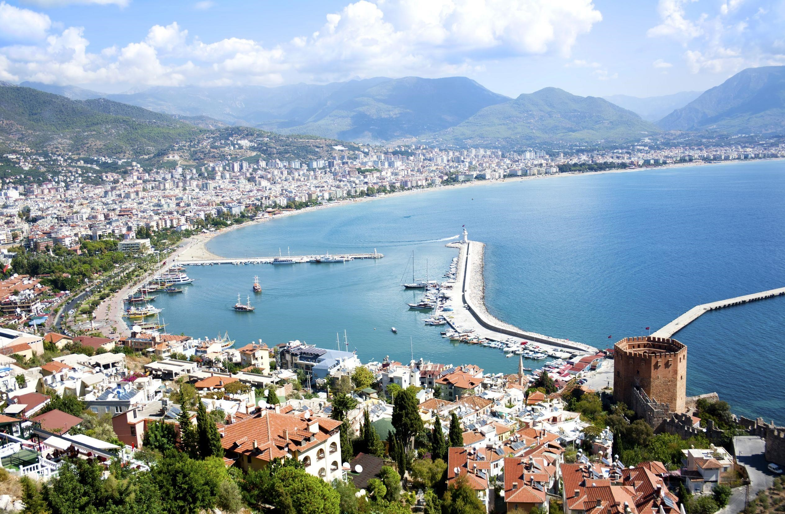
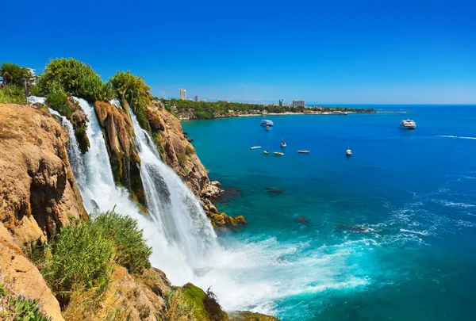
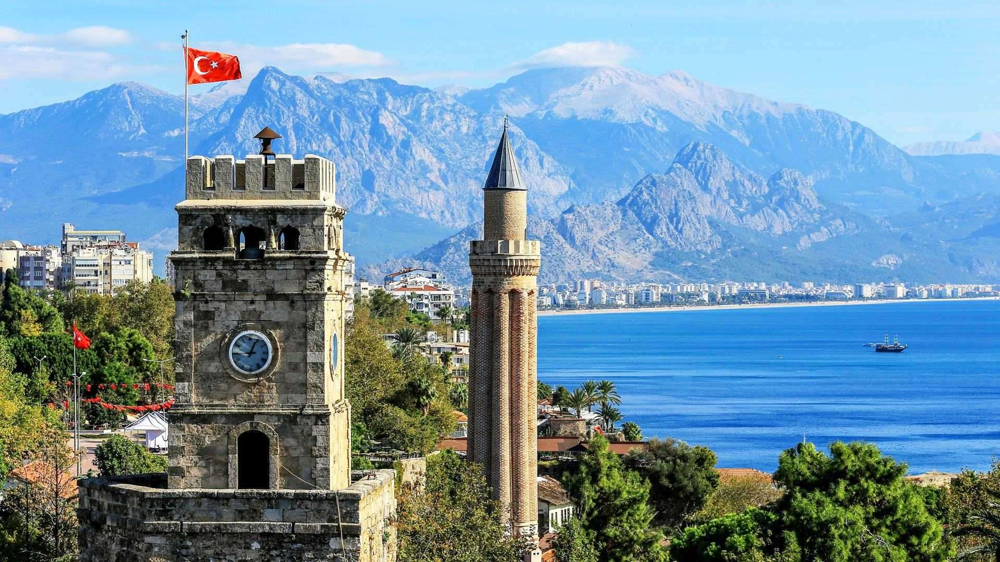

Antalya Hakkında
Antalya, Türkiye'nin en popüler tatil beldelerinden biridir. Hem tarihi hem de doğal güzellikleriyle ünlüdür. Antalya, her yıl milyonlarca turistin ilgisini çeker ve eşsiz plajlarıyla bilinir.
Ziyaret Edilmesi Gereken Yerler:
- Antalya Kaleiçi: Şehrin tarihi merkezi, dar sokakları ve Osmanlı döneminden kalma yapılarıyla ünlüdür.
- Olympos Antik Kenti: Antik Roma dönemine ait kalıntılar ve muazzam doğasıyla bilinen bir bölge.
- Köprülü Kanyon: Doğal güzellikleri ve rafting imkânı ile popüler bir turistik alan.